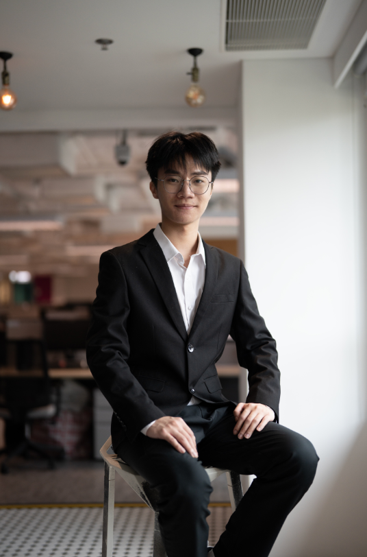

I build intelligent systems that see and decide
Machine Learning Engineer at Vidi Labs. Building vision-language models, autonomous navigation systems, and production CV pipelines that ship real-world impact.

The
journey
so far
From intern to engineer – building production AI systems that run at airports, win international awards, and push what machines can perceive.
Vidi Labs Limited
Machine Learning Engineer
- Fine-tuned VLMs (Qwen3-VL, Llava) for multimodal chatbots via LLaMA-Factory
- Built full-stack YOLO detection pipeline – data collection through deployment
- Architected vision-only indoor navigation framework (depth estimation, semantic mapping, path planning)
- Contributions awarded CES Innovation Award, HK ICT Awards 2024, SC WIN Now & Next Challenge
Vidi Labs Limited
ML Engineer Intern
- Developed CV models (CNNs, YOLO) for industrial automation
- Built OCR + document structure analysis pipelines
Hong Kong Baptist University
BSc (Hons) Computer Science, AI
- Low-light image enhancement with RetinexNet + PyTorch
- Library Management System with Vue.js + RESTful API
International Recognition
CES Innovation Award · HK ICT Awards 2024 · SC WIN Venture of the Year
Stack & capabilities
AI / ML
Languages
Tools & Frameworks
CV
Platforms
Languages
CES Innovation
Award 2024
Accessibility & Agetech
Featured work
Low-Light Image Enhancement
HKBU · PyTorch · RetinexNet
Designed a deep learning system using RetinexNet architecture to improve visibility in low-light conditions with rigorous qualitative and quantitative validation.
Library Management System
HKBU · Vue.js · REST API
Full-featured web app with book cataloging, loan tracking, and intuitive UI. Agile team delivery with RESTful integration and responsive frontend architecture.
Beyond the code
External Secretary
HKBU Social Service Association
Led 10 volunteers in community Cantonese teaching. Managed external relations, partnerships, and outreach communications.
Eco-Ranger
Hang Seng · Conservancy Association
Joined conservation teams for mountain clean-up operations and environmental outreach in Hong Kong.
Blood Donation Promoter
Hong Kong Red Cross
Organized on-campus donation events, engaged the public, and supported operations.
Let’s build
something intelligent
Open to ML engineering roles, research collaborations, and projects at the intersection of vision, language, and autonomous systems.